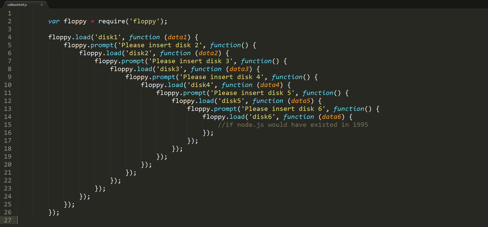

Node.js Basics
By Almog LaktiviIn This Module
Callbacks
Promises
Async/Await
Callbacks
What is callback?
A callback is a function that is to be executed after another function has finished executing
In JavaScript, functions are objects. ... Any function that is passed as an argument is called a callback functionCallback example
function doExcercise(num: number, midCallback: ()=>void, finishCallback: (num: number)=>void) {
//do something:
num++;
//callback 1:
midCallback();
//do something else:
num--;
//callback 2:
finishCallback(num);
}
doExcercise(12, ()=>{ console.log("mid"); }, (num) => { console.log(num); })
Callback function result standard
fs.getFile((err, result)=>{
if(err){
// do something with error
return;
}
// do something with result
});
So whats the problem with callback anyway?
What's the solution?
Promises
What is promise?
The Promise object represents the eventual completion (or failure) of an asynchronous operation, and its resulting value
Promise example
let promise1 = new Promise((resolve, reject) => {
setTimeout(function() {
resolve('foo');
}, 300);
});
promise1.then((value) => {
console.log(value);
// expected output: "foo"
}).catch((err: Error) => {
console.error(err);
});
console.log(promise1);
// expected output: [object Promise]
Promises cont.
getData()
.then((data)=>{
// do something with data
})
.catch((error)=>{
// do something with error
})
.finally(()=>{
// do something at the end
});
This is awesome, but...
getData()
.then((data)=>{
// manipulate data
getMoreData(data)
.then((moreData)=>{
// manipulate more data
getEvenMoreData(modeData)
.then((evenModeData)=>{
// handle data
})
.catch((er)r=>{
// handle errors of getEvenMoreData
});
})
.catch((err)=>{
// handle errors of getMoreData
})
})
What's the solution?
Async/await
Definition
TypeScript supports asynchronous functions for engines that have native support for ES6 generators, e.g. Node v4 and above. Asynchronous functions are prefixed with the async keyword; await suspends the execution until an asynchronous function return promise is fulfilled and unwraps the value from the Promise returnedExample
async function printDelayed(elements: string[]) {
for (const element of elements) {
await delay(400);
console.log(element);
}
}
async function delay(milliseconds: number) {
return new Promise(resolve => {
setTimeout(resolve, milliseconds);
});
}
printDelayed(["Hello", "beautiful", "asynchronous", "world"]).then(() => {
console.log();
console.log("Printed every element!");
});
- Just a wrapper around promises
- In future: unhandled promises will fail process, meanwhile surround with try/catch
- Each function using await should be masked as
async
Use Bluebird for awesome advanced async/await features

|
|